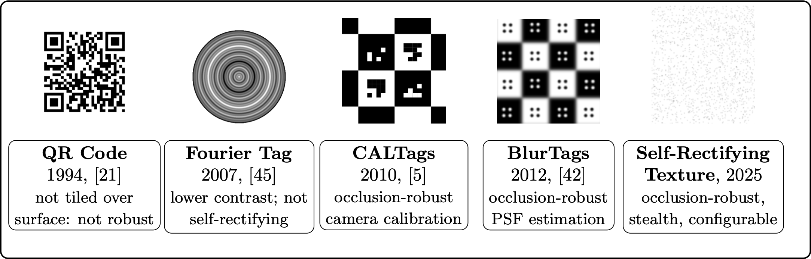
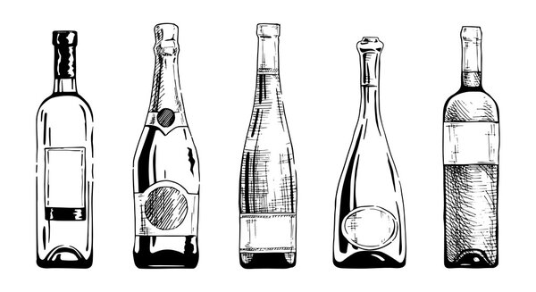
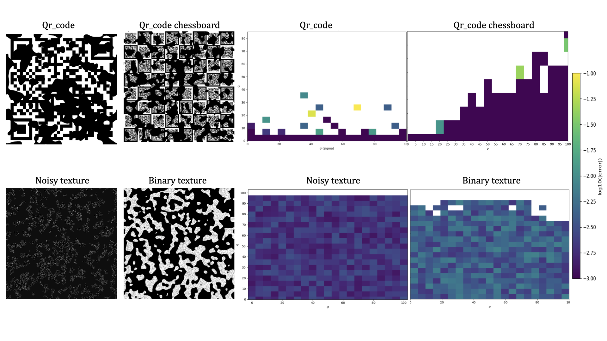
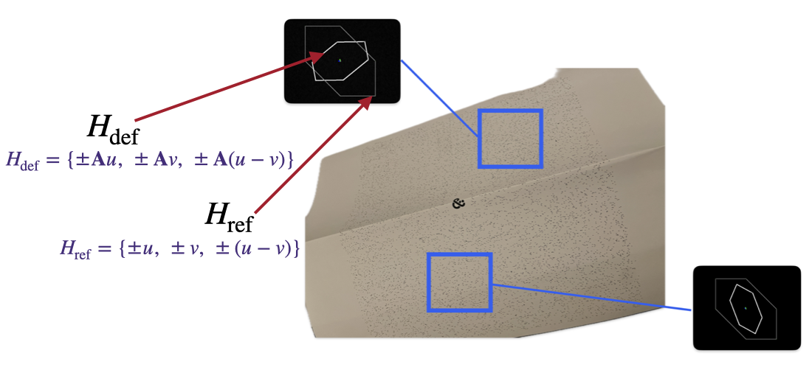
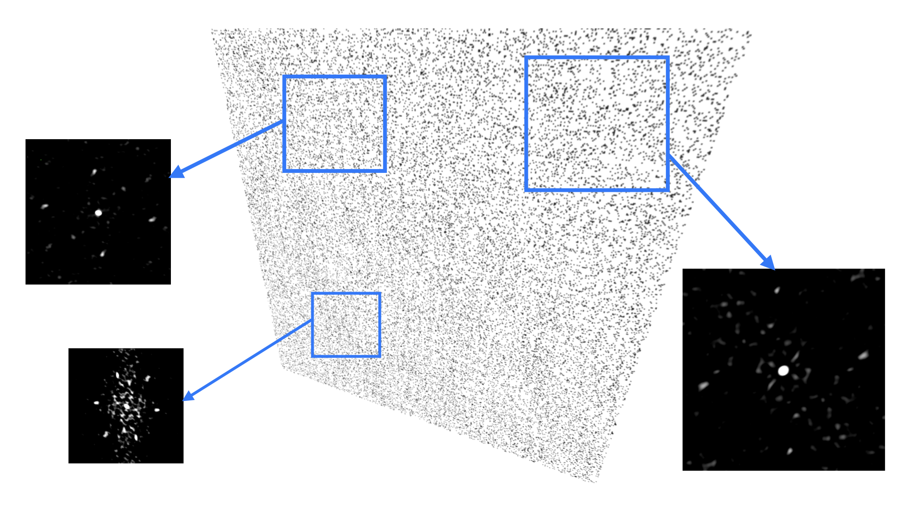
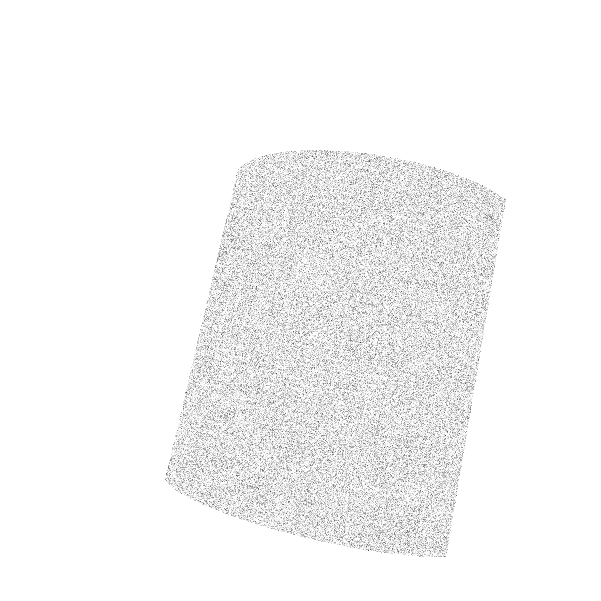

Abstract

Classical single-image rectification methods usually rely on conspicuous landmarks or printed markers that can be degraded, removed, or visually alter the surface they protect. In this work, we propose autocorrelation-based fiducial markers for traceability. Our approach relies on textures whose local normalized autocorrelation exhibits a characteristic hexagonal structure, allowing the recovery of local geometric information from a single image. From these local observations, we estimate affine distortions and aggregate them to infer a global rectifying transformation. This framework is particularly relevant for traceability applications on packaging and bottles, where surfaces may be planar or curved and where visually intrusive codes are undesirable. The proposed method opens the way to robust and discreet identification patterns that remain compatible with challenging real imaging conditions.
Motivation

In traceability applications, traditional visible identifiers such as QR codes or barcodes can be intentionally degraded, removed, or replaced. This issue is especially critical for high-value products such as wine bottles, where resale practices may rely on tampering with visible identifiers. Our goal is to design discreet fiducial textures that remain informative for geometric recovery while being harder to tear off or visually alter.
The problem becomes even more challenging on curved objects such as bottles, where perspective effects and surface curvature deform the observed texture. This motivates a method that estimates local geometric distortions from autocorrelation peaks and uses them to recover a meaningful global rectification.
Method Overview
Our method starts from specially designed textures whose autocorrelation reveals a fundamental hexagonal arrangement of peaks. These peaks encode local geometric information and make it possible to estimate local affine distortions from image patches. We then combine these local estimates across the image to recover a global geometric model and rectify the observed texture.
This approach is particularly useful when explicit landmarks are unavailable or undesirable, and when the texture may be observed under strong deformation, including non-planar settings.
Results

Self-rectifying textures VS Classic fiducial markers : Occlusion.

Example of a generated fiducial texture and its characteristic autocorrelation structure.

Local estimation of geometric distortions from autocorrelation peak configurations.

Rectification result from aggregated local geometric observations.

Illustration on curved surfaces, motivating robust traceability on bottles and packaging.
Video Presentation
If the embedded player does not load, open the video directly here: YouTube link.
Poster

BibTeX
@inproceedings{bencheikh2026autocorrelation,
title = {Autocorrelation-based Fiducial Markers for Traceability},
author = {Bencheikh, Ismail and Dunitz, Max and D’AUTUME, Marie and Meinhardt-Llopis, Enric and Pic, Marc and Facciolo, Gabriele and Musé, Pablo},
booktitle = {Proceedings of the IEEE/CVF Winter Conference on Applications of Computer Vision (WACV)},
year = {2026},
url = {https://benchismail.github.io/WACV2026/}
}Contact
For questions regarding this work, please contact i.bencheikh@att-fr.com.